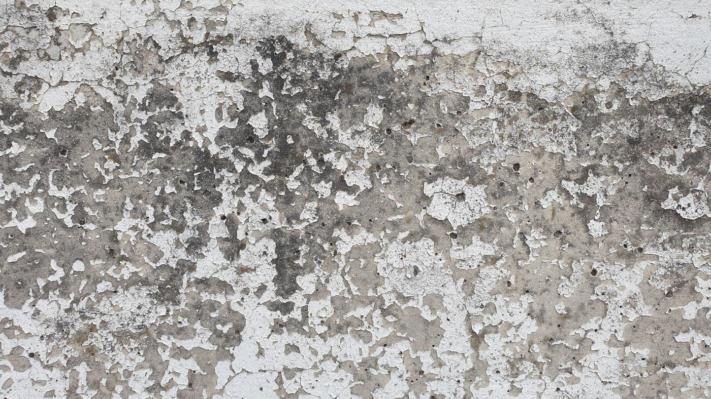

A Downriver city built by industry
The Detroit Historical Society connects Wyandotte's history to chemical manufacturing and an immigrant-built workforce. Visit Detroit also lists the city among Wayne County's downtown destinations. Housing from the industrial era makes up much of the older stock.
Industrial history is not a diagnosis of contamination at your address. Ask for sampling based on actual site conditions rather than treating the city's past as proof about your yard.

What that means for lead
A Downriver home can have a paint question and a soil question at the same time. Industrial history is not a diagnosis of contamination at your address. Ask for sampling based on actual site conditions rather than treating a city’s past as proof about a yard.
For a Wyandotte assessment, describe bare play areas, exterior paint deterioration and any earlier environmental reports. Tell the professional whether you need residential lead hazard evaluation or a broader environmental investigation. Those scopes may require different expertise and should not be bundled without explanation.
Lead services for Wyandotte homes
- Lead paint testing and inspection shows which painted surfaces carry lead in Wyandotte homes, before a purchase, a remodel or a rental turnover.
- A lead risk assessment keeps Wyandotte's two questions separate: deteriorated paint and dust inside, soil conditions outside, each measured on its own.
- Dust and soil hazard control checks the sills, floors and yard soil around Wyandotte homes, where paint dust and flakes collect.
- Lead paint removal and abatement permanently fixes confirmed hazards in Wyandotte houses, under containment with qualified crews.
- Encapsulation and enclosure seal or cover sound lead paint on suitable Wyandotte surfaces instead of stripping it.
- Lead-safe window and door replacement removes the rubbing painted parts that make dust in Wyandotte windows and doorways.
- Clearance testing confirms that the dust from the work is gone, so families or tenants can move back in.
- Rental lead documentation help walks Wyandotte rental owners through matching the exact report the city or program asks for.
Wyandotte on the map
Also serving nearby
Common questions
My yard is bare near the house. Should I worry about lead in the soil?
Bare soil near old painted exteriors is worth asking about, especially where children play. Only sampling establishes the concentration, so ask a risk assessor whether it is warranted.
Is this the same as an environmental contamination investigation?
No. Residential lead services focus on paint, dust and soil lead hazards. A broader environmental concern may need different expertise, so describe both when you ask.